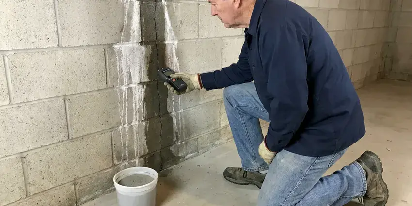

Water Leak Detection in Schofield Barracks, HI
A toilet flapper that never seals can cost as much as a pipe leak. HKL Plumbing checks it all in Schofield Barracks, HI.
- Pool Plumbing Tests
- Smart Leak Valve Installation
- Licensed Plumbers
- Upfront Detection Fee

Quit Paying for Water You Lose in Schofield Barracks, HI
Call (808) 649-6718. We can usually test within a day.
Locating Hidden Water Leaks in Schofield Barracks, HI
HKL Plumbing locates leaks under slabs, behind walls and below yards across Schofield Barracks, HI. Cutting comes last. Each suspected spot is confirmed by two methods, usually an acoustic reading backed by a thermal scan or a moisture meter, which keeps the repair opening small.
Our expertise includes:
- Acoustic listening and thermal scans
- Wall, ceiling and floor leak locating
- Slab leaks pinpointed within inches

Additional Plumbing Maintenance Services in Schofield Barracks, HI
Our maintenance and specialty plumbing services in Schofield Barracks, HI protect your home year-round and extend the life of every system.


Customers
Why Choose HKL Plumbing for Water Leak Detection in Schofield Barracks, HI?
Humidity and soil conditions can make leak damage worse, so we focus on the exact source. Guesses cost more. Our techs confirm a leak location with two tools before marking it, which means the wall or floor gets opened once and in the right spot.
- Future Alerts, Sensors and smart valves send early warnings about the next leak.
- Mold Prevention, Moisture trapped in walls feeds mold quickly, so we find leaks early.
- Zone Testing, We isolate each part of the system to find exactly which one leaks.
Citywide Coverage
No matter where you live in Schofield Barracks, the same gear comes to your door: meter test gear, acoustic listeners, thermal cameras and moisture meters. Large lots are no problem. We have traced service lines and irrigation systems hundreds of feet from the meter to the house.
Experienced Team
Our technicians have tracked down leaks in toilets, softeners, irrigation valves and underground service lines. Every source leaves clues. By comparing the meter, gauge and bill, they narrow it down before any acoustic work.
Safety-First Approach
Before working near wet drywall or flooded floors, our techs look for live electrical risks. Breakers get shut when needed. All repairs in Schofield Barracks are pressure tested before walls get closed, so a hidden joint does not start a second leak a month later.
Trusted Certified Schofield Barracks Plumbing Services Professionals
At HKL Plumbing, we are proud to offer certified plumbing services throughout Schofield Barracks, HI. Credentials matter in this trade. Every repair, install and maintenance visit follows strict safety and quality rules, and the plumbers doing the work carry recognized industry credentials.
Call Us Now PHCC Plumbing Contractor Recognition
PHCC Plumbing Contractor Recognition Better Business Bureau (BBB) Accreditation
Better Business Bureau (BBB) Accreditation Angi Certified Pro
Angi Certified Pro ISO 9001 Quality Management Certification
ISO 9001 Quality Management CertificationWhere Water Leaks Hide in Schofield Barracks, HI
Slab Leak Detection in Schofield Barracks
Concrete slab homes hide supply lines under the floor, and a pinhole there can run for months. Warm floor spots are the classic sign. HKL Plumbing isolates the hot and cold sides with pressure gauges, then listens through the slab with a ground microphone and confirms with a thermal camera, so the spot is marked before any concrete gets touched.

Main Service Line Leaks in Schofield Barracks, HI
The service line carries full street pressure and may leak below ground for months. Wet soil is often the only clue. We trace the line, listen for the leak and mark it for a targeted repair, usually suggesting replacement when the line is old galvanized or polybutylene.
Yard and Outdoor Leak Detection in Schofield Barracks
Buried irrigation, hose bib lines and service pipes may soak the yard for months. Soggy patches are the clue. We locate buried lines with tracers and find leaks with acoustic gear or tracer gas, so we dig one small hole instead of tearing up landscaping, and early repair keeps saturated soil away from the foundation in Schofield Barracks, HI.
Hidden Wall and Ceiling Leaks in Schofield Barracks, HI
Stained drywall, peeling paint and a musty smell usually mean water inside the wall. Shower valves cause many of these. Our techs scan with thermal cameras and confirm with a moisture meter, checking fittings, old galvanized pipe and shower pans until the source is clear, which keeps the wall opening small.
Why Electronic Locating Saves Money in Schofield Barracks, HI
Digging around to find a leak costs the most. Our thermal cameras, acoustic listeners and moisture meters find the spot from the surface, which limits the opening to the exact spot. That saves drywall and concrete. Homeowners in Schofield Barracks save on both the repair and the patch.
Water Leak Price Ranges in Schofield Barracks, HI
Testing typically runs $150 to $450. Toilet and fixture repairs often cost $100 to $300, while service line repairs commonly run $800 to $3,000 depending on length, depth and pipe material. A smart shutoff valve costs $500 to $1,500 installed. A moderate leak can pay for the test in saved water.
Slab Leaks and Foundations in Schofield Barracks
A slab leak wets the soil the house sits on. The soil is the worry. We listen for water escaping under the floor with acoustic gear, confirm hot-side leaks with a thermal camera and mark the spot within inches, which keeps the repair to a small hole or an overhead reroute, before the foundation starts to move in Hawaii homes.

Irrigation Leak Detection in Schofield Barracks
Sprinkler and drip lines run underground across the whole yard, and they hide a lot of water loss. Stuck valves are common. We isolate the irrigation system from the house, run each zone and trace leaking lines, since a cracked lateral or broken emitter can lose thousands of gallons unnoticed.
Water Leak Techs Near You in Schofield Barracks, HI
Living and working around Schofield Barracks keeps our arrival times short. After the leak is found, our plumbers can often repair it the same day, or schedule it at a time that works for you.
Need a water leak found near you? HKL Plumbing brings meter test gear, acoustic tools and thermal cameras on the first trip, so the search does not stall for missing equipment. One visit usually does it in Schofield Barracks.
HKL Plumbing at a Glance
- Fully licensed plumbing team covering Schofield Barracks, HI
- Same-day appointments and 24/7 emergency response
- Upfront, flat-rate pricing before work begins
- 4.8-star rated by 529+ Hawaii customers
Schofield Barracks Map
Schofield Barracks Information
- Population
- 14,904
- Area codes
- Local
- Service area
- Schofield Barracks and communities within 40 miles
- Nearby
- Wahiawa, Mililani Town, Mililani Mauka, Royal Kunia
Every gallon on your bill costs money in Schofield Barracks, HI, and slab floors, irrigation and mineral-heavy water all add to the odds of a hidden leak. Around Schofield Barracks, sediment and fine volcanic grit can still build up in aerators, valves, and water heater tanks, so periodic flushing is worthwhile.
Talk to a Plumber
Call HKL Plumbing for honest, reliable plumbing from people who know the trade in Schofield Barracks, HI.
Our Specialized Plumbing Services in Schofield Barracks, HI
At HKL Plumbing, you get every kind of plumbing service from one company across Schofield Barracks, HI. From leak detection to full system installs, our team works fast and charges fair prices on homes and commercial properties alike. Take a look at our core services below:


From Meter Test to Repair in Schofield Barracks, HI
Confirm it, isolate it, locate it, fix it. That order keeps the repair small.
Book a Visit
Call (808) 649-6718 to describe the problem. We set an appointment and quote the detection fee.
Meter and Zone Tests
We confirm the leak at the meter and isolates the house, yard and pool at your Schofield Barracks home.
Pinpoint the Leak
We find the exact spot with acoustic and thermal gear, confirmed by a second method.
Frequently Asked Questions About Water Leak Detection in Schofield Barracks
Expect $250 to $750 in Schofield Barracks, HI. Under-slab leaks land higher. Whether the leak is in a slab, a wall or a buried yard line affects the cost, since each one needs different tools and hours, and we quote before starting.
Figure on one to three hours for most homes. More leaks add time. Buried lines or more than one leak can add time, since every spot gets confirmed.
Yes. A stuck regeneration valve can drain water around the clock. We check softeners on every leak visit.
Yes. Repairs carry a written parts and labor warranty. You see the terms in writing before work starts.
Smart shutoff valves such as Moen Flo and Phyn, plus wireless leak sensors that sit on the floor by the water heater, washer and sinks. These monitor flow and can shut off water. Alerts go to your phone.
High bills, damp spots, water sounds with fixtures off and visible mold usually mean a hidden leak somewhere between the meter and the farthest fixture in the house. So does a drop in pressure. If the meter moves with everything off, that settles it.
Usually you do. The pipe past the meter is the owner's responsibility in most areas. We locate the leak and give you repair and replacement options that meet local code, with a price for each one so you can compare in Schofield Barracks.
Over time, it can. Scale and water chemistry wear down old copper and galvanized lines, which leads to pinholes. Yearly maintenance helps.
What People Are Saying About Our Plumbing Experts?

Jessica T.
We were adding a gas range in a kitchen remodel and needed a new line run from the meter. The plumber pulled the permit, ran the pipe through the crawl space, and had it inspected and approved within the week.
Gas Line Repair · Mililani Town, HI
Kevin O.
Before buying our house I paid for a sewer camera inspection. HKL Plumbing found a belly in the line that held standing water about forty feet from the cleanout. We used the video to get the sellers to fix it before closing.
Sewer Camera Inspection · Waipio, HI
Carlos V.
Our house still had galvanized pipe, and upstairs the shower was a trickle. The crew repiped everything in PEX over three days and patched every drywall hole before they left. The pressure difference is night and day.
Repiping · Mililani Mauka, HI
Paul B.
Our pit pump ran nonstop even in dry weather. The plumber found the check valve was stuck open, so the same water kept cycling back into the pit. New valve, new float switch, done in an hour. It runs quiet now.
Sump Pump · Schofield Barracks, HI
Karen W.
After our third pinhole leak in copper, we stopped patching. HKL Plumbing gave us a written plan room by room and repiped the house in PEX while we stayed in it. The crew covered our floors every morning and cleaned up every night.
Repiping · Mililani Town, HIMark T.
The floor drain in our office break room backed up every few weeks. The plumber ran a cable, then put a camera down and found roots at a joint about thirty feet out. Seeing it on the screen made the decision easy.
Drain Cleaning · Schofield Barracks, HI